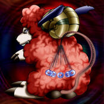

Mystical Sheep #1

STATS
ATK: 1150
DEF: 900DECK COST
Deck Cost per Card: 21Fusion List (24 Possible Fusions)
- Mystical Sheep #1 + Bat = Giga-tech Wolf
- Mystical Sheep #1 + Blast Juggler = Flame Cerebrus
- Mystical Sheep #1 + Dancing Elf = Nekogal #2
- Mystical Sheep #1 + Darkworld Thorns = Flower Wolf
- Mystical Sheep #1 + Disk Magician = Dice Armadillo
- Mystical Sheep #1 + Dissolverock = Flame Cerebrus
- Mystical Sheep #1 + Enchanting Mermaid = Nekogal #2
- Mystical Sheep #1 + Fire Eye = Flame Cerebrus
- Mystical Sheep #1 + Firegrass = Flame Cerebrus
- Mystical Sheep #1 + Giga-tech Wolf = Dice Armadillo
- Mystical Sheep #1 + Griggle = Flower Wolf
- Mystical Sheep #1 + Kaminarikozou = Tripwire Beast
- Mystical Sheep #1 + Lady of Faith = Nekogal #2
- Mystical Sheep #1 + Lunar Queen Elzaim = Nekogal #2
- Mystical Sheep #1 + Man-Eating Plant = Flower Wolf
- Mystical Sheep #1 + Man Eater = Flower Wolf
- Mystical Sheep #1 + Mechanical Snail = Giga-tech Wolf
- Mystical Sheep #1 + Mechanical Spider = Giga-tech Wolf
- Mystical Sheep #1 + Mushroom Man = Flower Wolf
- Mystical Sheep #1 + Petit Angel = Garvas
- Mystical Sheep #1 + Queen's Double = Nekogal #2
- Mystical Sheep #1 + Supporter in the Shadows = Tiger Axe
- Mystical Sheep #1 + Water Element = Nekogal #2
- Mystical Sheep #1 + White Dolphin = Tatsunootoshigo